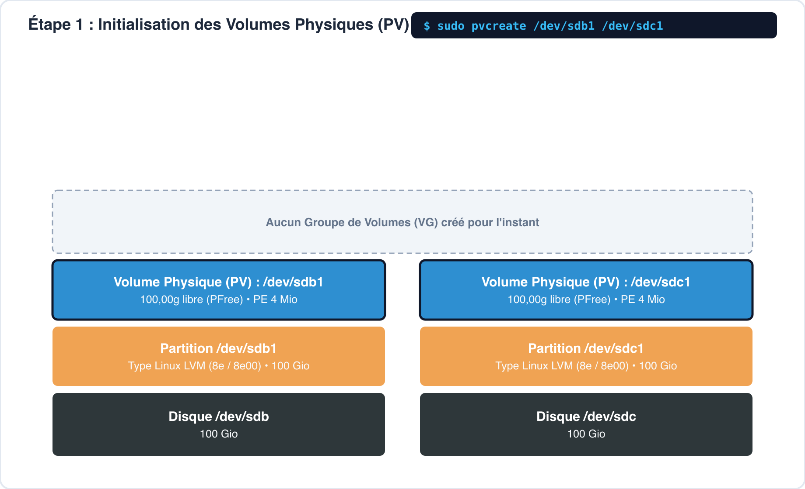
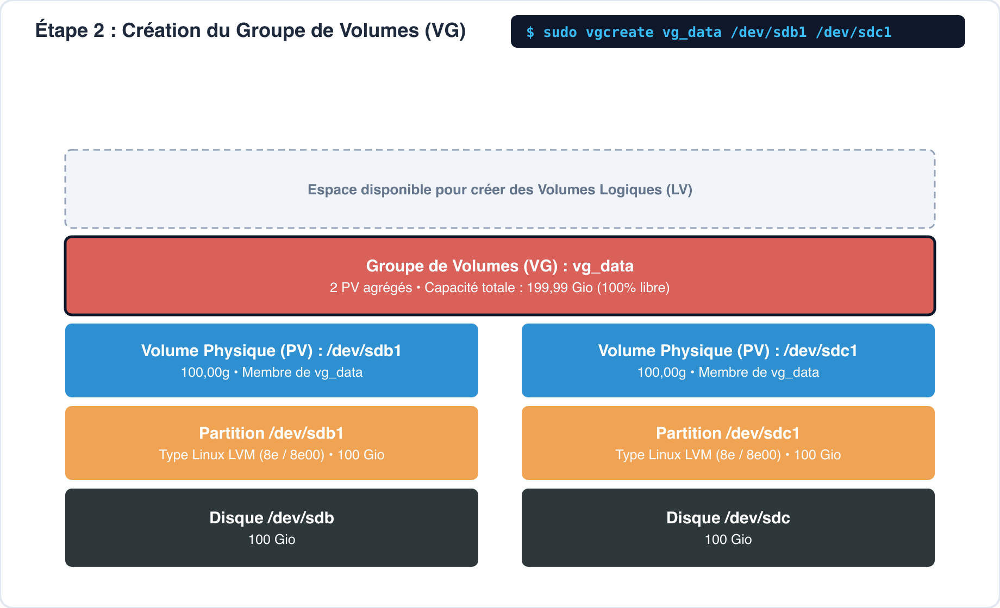
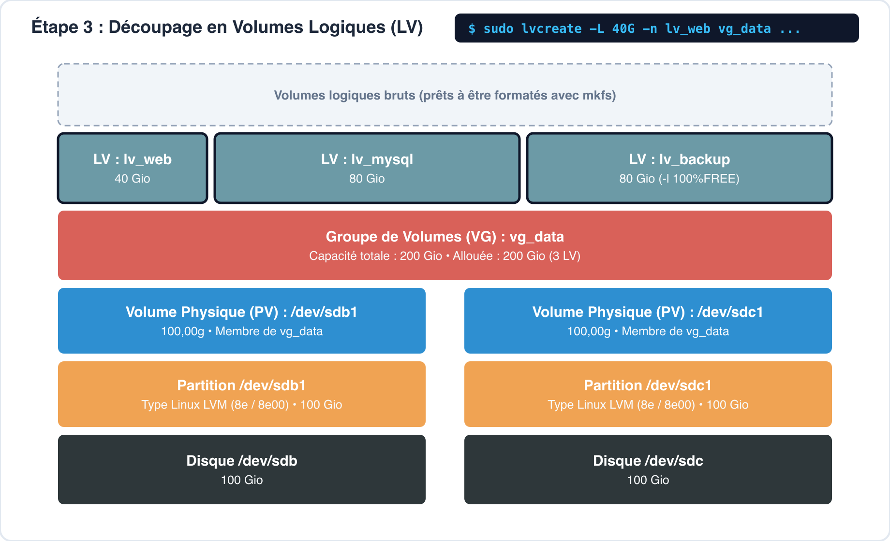
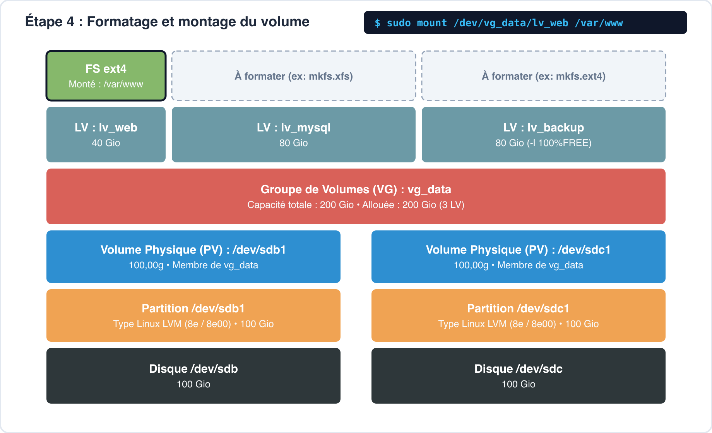

34. V.5 Gestion des volumes logiques (LVM)
Le partitionnement standard de disques physiques présente une rigidité historique : une fois créée, la taille d'une partition physique contiguë est difficilement modulable, et une partition ne peut pas s'étendre sur plusieurs disques différents.
Pour surmonter ces contraintes, Linux intègre LVM (Logical Volume Manager). LVM introduit une couche d'abstraction logicielle entre les disques physiques et les systèmes de fichiers, offrant une souplesse totale pour l'allocation, l'extension et la sauvegarde du stockage.
Cette section couvre l'architecture de LVM et ses commandes d'exploitation requises pour le programme LPIC-1 (Objectif 102.1).
https://www.lasserre.net/blog/2
34.1 V.5.1 Pourquoi utiliser LVM ?
| Limites du partitionnement classique | Avantages majeurs de LVM |
|---|---|
| Taille des partitions figée et contiguë sur un seul disque. | Volumes redimensionnables à chaud sans interruption de service. |
| Impossible de fusionner deux disques physiques dans une même partition. | Agrégation de disques hétérogènes (SSD, HDD, SAN) dans un même pool. |
| Procédure complexe et risquée de déplacement de données lors du changement de disque. | Migration de données à chaud d'un disque vers un autre (pvmove). |
| Sauvegardes à chaud difficiles sans geler les bases de données. | Création d'instantanés (snapshots) instantanés pour les sauvegardes. |
34.2 V.5.2 L'architecture LVM à 3 couches
LVM structure le stockage en trois niveaux hiérarchiques distincts :
- Volumes Physiques (PV - Physical Volumes)
- Groupe de Volumes (VG - Volume Group)
- Volumes Logiques (LV - Logical Volumes)
graph TD
subgraph "Niveau 1 : Stockage Physique (PV)"
DiskA["Partition /dev/sdb1 (100 Go)"]
DiskB["Partition /dev/sdc1 (100 Go)"]
PV1["PV 1 (/dev/sdb1)<br/>PE de 4 Mo"]
PV2["PV 2 (/dev/sdc1)<br/>PE de 4 Mo"]
DiskA --> PV1
DiskB --> PV2
end
subgraph "Niveau 2 : Pool d'agrégation (VG)"
VG["Volume Group (VG) : 'vg_data'<br/>Capacité totale : 200 Go (Pool de PE partagés)"]
PV1 --> VG
PV2 --> VG
end
subgraph "Niveau 3 : Volumes Virtuels Utilisables (LV)"
LV1["LV 'lv_web' (50 Go)<br/>Formaté en ext4 -> /var/www"]
LV2["LV 'lv_mysql' (100 Go)<br/>Formaté en XFS -> /var/lib/mysql"]
Free["Espace libre restant (50 Go)<br/>Disponible pour extensions futures"]
VG --> LV1
VG --> LV2
VG --> Free
end34.2.1 V.5.2.1 Volumes Physiques (PV - Physical Volumes)
Un PV est un support de stockage brut initialisé pour être pris en charge par LVM. Il peut s'agir :
- D'un disque entier non partitionné (ex.
/dev/sdb). - D'une partition dédiée (ex.
/dev/sda3), marquée avec le type8esousfdisk(MBR) ou8e00sousgdisk(GPT).
Dès son initialisation, LVM découpe virtuellement le PV en petits blocs élémentaires de taille fixe appelés PE (Physical Extents). Par défaut, un PE mesure 4 Mio.
34.2.2 V.5.2.2 Groupe de Volumes (VG - Volume Group)
Le VG est le conteneur central (le pool de stockage). Il réunit un ou plusieurs PV. LVM met en commun tous les PE de tous les disques du groupe. L'espace total du VG équivaut à la somme des capacités de ses volumes physiques.
34.2.3 V.5.2.3 Volumes Logiques (LV - Logical Volumes)
Le LV est la partition virtuelle découpée dans le VG. C'est l'équivalent d'une partition classique, mais dotée d'une flexibilité absolue :
- Il est constitué de LE (Logical Extents) qui pointent directement vers des PE disponibles dans le VG.
- Il peut recevoir n'importe quel système de fichiers (
ext4,XFS,swap). - Il peut être étendu en ajoutant simplement des extents supplémentaires prélevés dans le VG.
34.3 V.5.3 Nommage et accès aux volumes logiques
Une fois un volume logique créé (par exemple le LV lv_web dans le VG vg_data), Linux l'expose sous deux chemins de fichiers de périphériques équivalents :
-
Chemin conventionnel :
/dev/<nom_du_vg>/<nom_du_lv>
(Exemple :/dev/vg_data/lv_web) -
Chemin Device Mapper :
/dev/mapper/<nom_du_vg>-<nom_du_lv>
(Exemple :/dev/mapper/vg_data-lv_web)
Ces deux chemins pointent vers le même périphérique bloc et peuvent être utilisés indifféremment dans vos commandes et dans /etc/fstab.
34.4 V.5.4 Commandes d'administration LVM
LVM dispose d'une nomenclature de commandes standardisée et mnémotechnique, déclinée pour chaque couche :
| Action | Physical Volume (PV) | Volume Group (VG) | Logical Volume (LV) |
|---|---|---|---|
| Créer | pvcreate |
vgcreate |
lvcreate |
| Afficher (résumé) | pvs |
vgs |
lvs |
| Afficher (détail) | pvdisplay |
vgdisplay |
lvdisplay |
| Scanner les disques | pvscan |
vgscan |
lvscan |
| Agrandir | pvresize |
vgextend |
lvextend |
| Réduire | — | vgreduce |
lvreduce |
| Supprimer | pvremove |
vgremove |
lvremove |
34.5 V.5.5 Déploiement pas-à-pas d'un environnement LVM
34.5.1 V.5.5.1 Étape 1 : Initialiser les Volumes Physiques (pvcreate)

$ sudo pvcreate /dev/sdb1 /dev/sdc1
Physical volume "/dev/sdb1" successfully created.
Physical volume "/dev/sdc1" successfully created.
Vérifions avec la commande concise pvs :
$ sudo pvs
PV VG Fmt Attr PSize PFree
/dev/sdb1 lvm2 --- 100,00g 100,00g
/dev/sdc1 lvm2 --- 100,00g 100,00g
34.5.2 V.5.5.2 Étape 2 : Créer le Groupe de Volumes (vgcreate)

Créons un VG nommé vg_data regroupant nos deux disques :
Consultons le résultat :
Le VG offre immédiatement 200 Gio d'espace agrégé.34.5.3 V.5.5.3 Étape 3 : Créer les Volumes Logiques (lvcreate)

Créons un volume logique nommé lv_web d'une taille de 40 Gio :
Créons un deuxième volume lv_mysql occupant 80 Gio :
Option très pratique : allouer tout l'espace libre restant avec -l 100%FREE :
Vérifions nos volumes :
$ sudo lvs
LV VG Attr LSize Pool Origin Data% Meta% Move Log Cpy%Sync Convert
lv_web vg_data -wi-a----- 40,00g
lv_mysql vg_data -wi-a----- 80,00g
34.5.4 V.5.5.4 Étape 4 : Formater et monter le volume

Le volume s'utilise exactement comme une partition classique :
// Création du système de fichiers
$ sudo mkfs.ext4 /dev/vg_data/lv_web
// Montage dans l'arborescence
$ sudo mkdir -p /var/www
$ sudo mount /dev/vg_data/lv_web /var/www
Utiliser plusieurs disques physiques dans un même VG
Dans cet exemple, /dev/sdb1 et /dev/sdc1 appartiennent à deux disques physiques différents, réunis dans le même pool vg_data (200 Gio). Cela permet à un seul Volume Logique de dépasser la capacité d'un disque individuel (par exemple créer un LV de 150 Gio sur deux disques de 100 Gio).
Lors du lvcreate, LVM peut répartir les blocs (extents) de plusieurs façons :
- Linéaire (par défaut) : remplit les extents du premier PV, puis continue sur le second.
- Striping (
-i 2) : répartit les données en alternance sur les deux disques (façon RAID 0) pour augmenter les performances. - Miroir / RAID (
--type raid1ou-m 1) : duplique les données sur les deux disques pour tolérer la panne d'un disque.
Point de vigilance : en mode linéaire ou striping (sans redondance), la panne d'un des deux disques entraîne la perte des données qui y résident. En production, on place généralement LVM au-dessus d'un RAID (matériel ou mdadm) ou on active le RAID intégré de LVM.
34.6 V.5.6 Extension d'un volume logique à chaud
L'atout majeur de LVM est de pouvoir agrandir un volume sans démonter le système de fichiers ni couper les services applicatifs.
L'agrandissement s'effectue en deux étapes complémentaires :
- Agrandir le conteneur logique (LV) avec
lvextend. - Agrandir le système de fichiers sous-jacent pour qu'il reconnaisse les nouveaux blocs.
34.6.1 V.5.6.1 Méthode 1 : Agrandissement en deux commandes
// 1. Agrandir le volume logique de +20 Gio
$ sudo lvextend -L +20G /dev/vg_data/lv_web
Size of logical volume vg_data/lv_web changed from 40,00 GiB to 60,00 GiB.
Logical volume vg_data/lv_web successfully resized.
// 2. Agrandir le système de fichiers :
// Si le format est ext4 (exécuté sur le périphérique) :
$ sudo resize2fs /dev/vg_data/lv_web
// Si le format est XFS (attention : s'exécute sur le POINT DE MONTAGE !) :
// sudo xfs_growfs /var/www
34.6.2 V.5.6.2 Méthode 2 : L'option tout-en-un -r (resizefs)
L'option -r (ou --resizefs) de lvextend demande à LVM de détecter automatiquement le système de fichiers (ext4 ou XFS) et d'adapter sa taille immédiatement après l'extension du LV :
Cette commande unique étend le volume logique ET agrandit le système de fichiers à chaud en une seule opération sans aucun risque d'oubli.
34.7 V.5.7 Ajouter un nouveau disque à un VG existant (vgextend)
Si votre groupe de volumes n'a plus d'espace libre, vous pouvez brancher un nouveau disque physique (ex. /dev/sdd), l'initialiser et l'intégrer au pool sans arrêter le serveur :
// 1. Déclarer le nouveau disque
$ sudo pvcreate /dev/sdd
// 2. Agrandir le pool de stockage du VG
$ sudo vgextend vg_data /dev/sdd
Volume group "vg_data" successfully extended
Le VG dispose immédiatement de la capacité du nouveau disque pour continuer à agrandir vos volumes logiques.